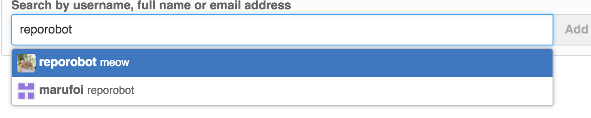
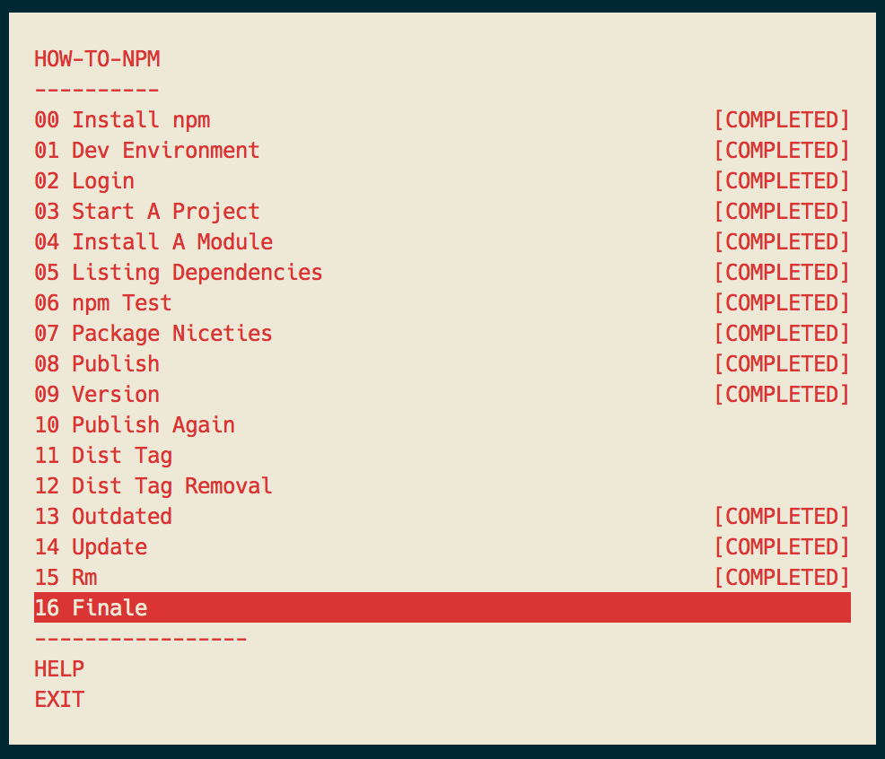

Two sessions
For this month there are two workshoppers we will be completing. Each offers a very different set of lessons but each will provide the same valuable experience. Please try to have Node.js and the workshoppers installed BEFORE the night of the session.
- Git-it: Learn Git and GitHub basics. Whether you are new to open source or have been committing for years this course will help you refine your skills.
- How to npm: Learn how to use and create npm modules. This may seem like an intro but it likely has some commands you have never used before.
Agenda
April 11, 2016:
Agenda
- 6:00 pm
- Dinner is served
- 6:15 pm
- Introduction
- 6:30 pm
- Session Begins
- 7:30 pm
- Break
- 7:45 pm
- Continue Session
- 8:45 pm
- End session
Getting Started with Node
Node.js is easy to install. Just visit the download page and get started. (https://nodejs.org/en/download/)
The official site has great documentation on their APIs. (https://nodejs.org/docs/v5.1.0/api/)
Mozilla Developer Network probably has the best JavaScript docs. (https://developer.mozilla.org/en-US/docs/Web/JavaScript)
The Art of Node is a great guide on the core concepts of Node.js. (https://github.com/maxogden/art-of-node/#the-art-of-node)
An excellent list of modules, resources, and other node knowledge is listed on Awesome Node. (https://github.com/sindresorhus/awesome-nodejs)
Git-it
Github: https://github.com/jlord/git-it
Ensure that Node.js is installed and that you have an internet connection. Open your terminal and run this command:
npm install --global git-itThe --global option installs this module globally so that you can run it as a command in your terminal.
Having issues with installation?
If you get an EACCESS error, the simplest way to fix this is to rerun the command, prefixed with sudo:
sudo npm install --global git-itYou can also fix the permissions so that you don't have to use sudo. Take a look at this npm documentation: https://docs.npmjs.com/getting-started/fixing-npm-permissions
Run the workshop
Open your terminal and run the following command:
git-itTips on a few problems you might have
08 - It's A Small World
Be sure to add the correct 'reporobot'. The one highlighted below.

How to NPM
Github: https://github.com/npm/how-to-npm
Ensure that Node.js is installed and that you have an internet connection. Open your terminal and run this command:
npm install --global how-to-npmThe --global option installs this module globally so that you can run it as a command in your terminal.
Having issues with installation?
If you get an EACCESS error, the simplest way to fix this is to rerun the command, prefixed with sudo:
sudo npm install --global how-to-npmYou can also fix the permissions so that you don't have to use sudo. Take a look at this npm documentation: https://docs.npmjs.com/getting-started/fixing-npm-permissions
Run the workshop
Open your terminal and run the following command:
how-to-npmTips on a few problems you might have
04 - Install A Module
npm install --save @linclark/pkg
08 - Publish
npm publish --access=public
Some issues with verification on a few tasks but just keep going.
